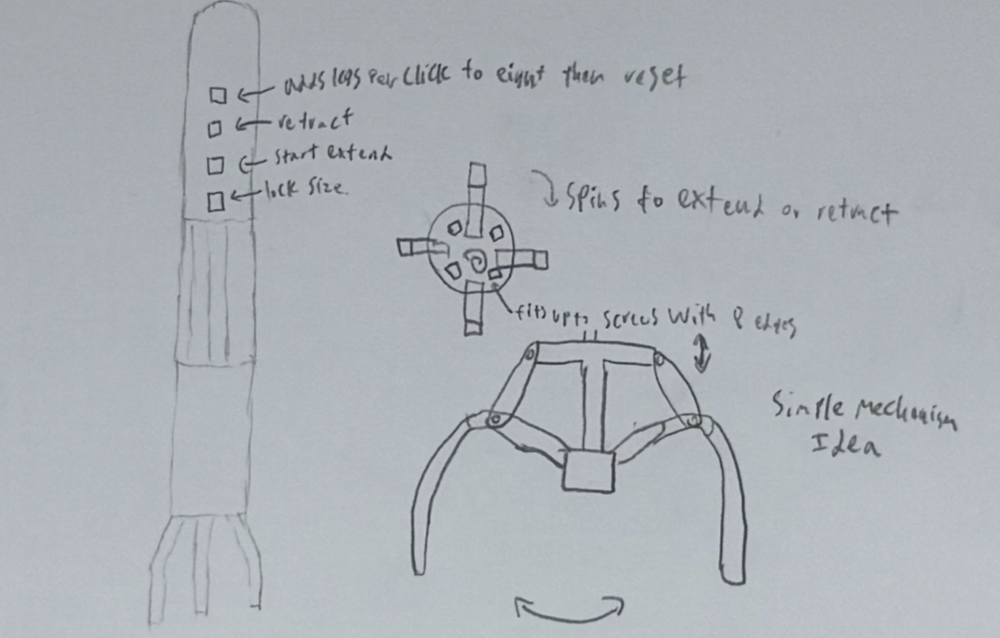
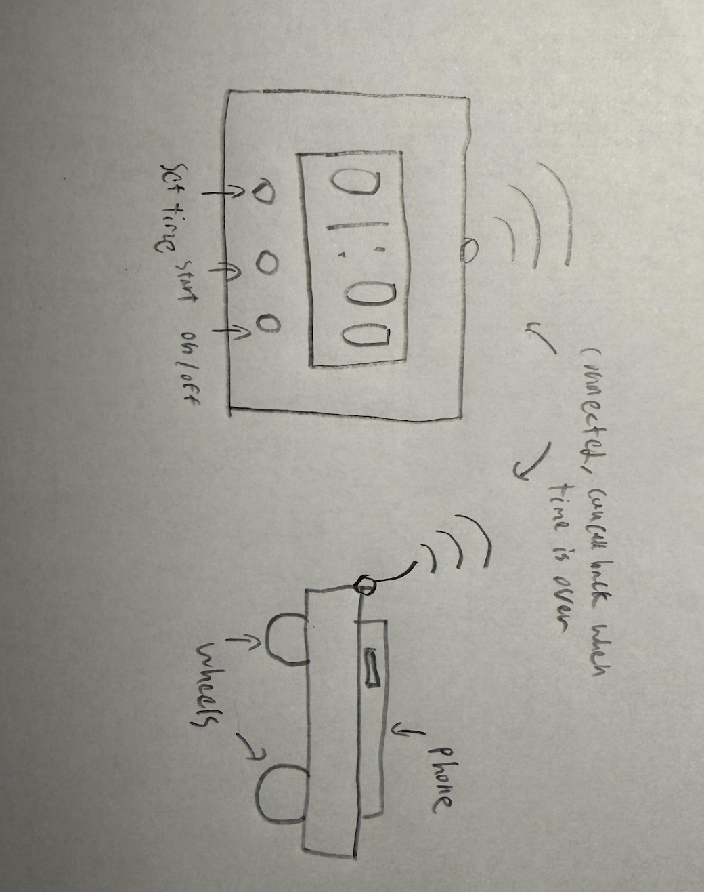
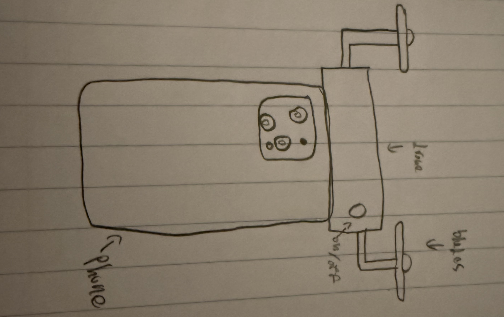

The thing that inspired me to create the Universal Screw was my troubles that I had at home or in my robotics club. The problem was that I could never find the right size of screwdriver to fit the screw whether it be because the screw was stripped, or just due to me not having the right screwdriver.
When this project is done it will have the shaft of a screwdriver and four buttons on the shaft, you can extend or retract individual "arms" to fit snugly into the screw hole. There will be 8 "arms" in total so that the universal screwdriver will be able to fit any kind of drive.

This project was inspired by the troubles that many students, including me face, time mangement and procrastination. There are many other time management products, however most are online and uncomfortable to use. I hope that my physical Runaway phone will help solve the problem of time management more throughly.
After completion the Runaway Phone will consist of two parts, the hub/clock and the cart. The hub/clock is where you will be able to set the amount of time you want to be undistracted for then you can activate the device. After activation, when you place your phone onto the cart, the cart will run away to one of many predertermined locations to hide from you, after the allotted time is over the hub will send a signal for the cart to come back with your phone.

I have always wanted to acquire a camera drone to take cool pictures while traveling to different countries. However, most camera drones are unpractical as they can be costly, easy to damage, and hard to carry around.Once succesfully completed the drone phone will be a drone attachment that will be easy to conect to your phone by attaching a phone case to the phone which will connect to the drone. After connection to the phone, the drone will drive the phone around using a controler or hover a set distance from the person to take picturesusing the phone's camera.